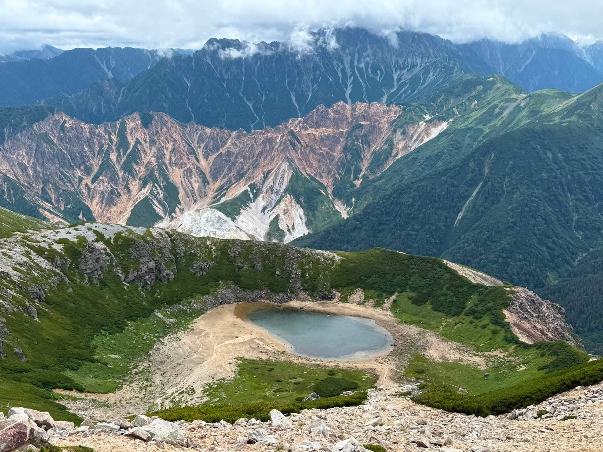
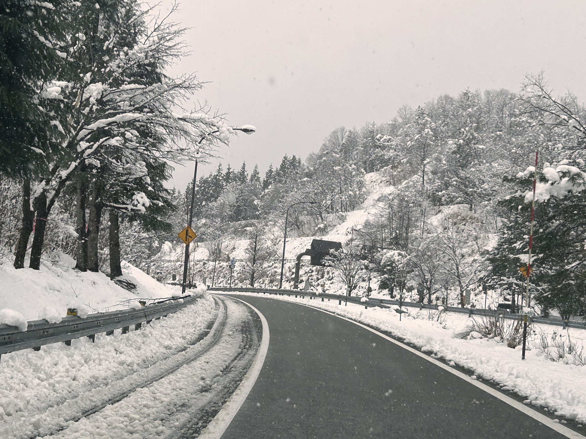

Add Clip-01.mp4 to the site folder to play “Earth Seen From Above.”
Clip-01.mp4
Add Clip-02.mp4 to the site folder to play “Felt From Within.”
Clip-02.mp4
Add Clip-3.mp4 to the site folder to play “Beyond.”
Clip-3.mp4


YEARS BEHIND
NOW
THE BORDER IS ALWAYS MOVING
BEYOND